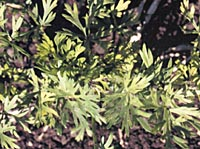

What is caraway?
Caraway (Carum carvi), a member of the Umbelliferae (carrot family), is an annual or biennial spice crop. It has an erect, branching stem
growing to a height of approximately 0.6 metres (2 feet). The most familiar use of caraway seeds is as a flavoring in breads or cheeses. Many rye breads contain caraway seeds.
Why produce caraway?
Caraway seed is used as a flavouring for foods such as bread, cheese, and sauerkraut. It contains 2.5 to 4.5% essential oil, which is about 52% carvone and
45% limonene. The oil is used to flavour meats, mouthwash and liqueurs.
There is potential for industrial uses of caraway oil. Carvone, the principal constituent of caraway oil, can be produced synthetically. This has lowered demand for caraway oil in recent years.
Where is caraway produced?
Caraway is cultivated from northern temperate to tropical climates, including Northern Europe, Russia, Jamaica, India, Canada and the United States. It is grown in Saskatchewan as a minor specialty crop.
Much of the world's production of caraway is processed and marketed by Dutch companies. Canadian brokers and millers are expressing increased interest in caraway grown in Western Canada. A number of companies
trading in special crops in Saskatchewan buy and sell caraway.
How much is produced?
Planted acreage of caraway in Saskatchewan has increased to approximately
3,000 ha (8,000 acres) in 1995. The average yield of the biennial type is
approximately 800 kg/ha (700 lbs/acre). Yields of annual caraway have been
lower to date. Annual caraway is very late maturing and often must be distilled,
as frozen seed is of poor quality.

What does it look like?
There are two types of caraway; annual and biennial. Commercial production in Saskatchewan is of the biennial type. Biennial caraway requires a second growing season to produce seed. Seed planted in the first year germinates and produces bushy green foliage about 20 cm (8 inches) in height. In the second and sometimes the third year, the plant grows to its full height and sets seed, with some plants dying after the second year.
Caraway seeds (each is a split half of a fruit) are curved, and tapered at each
end with five pale ridges. The colour of the "valley" between each ridge should be dark brown.

How is it produced?
Caraway can be grown successfully on a wide range of soil types and regions in Saskatchewan. Shallow, sandy soil should be avoided. Caraway germinates very slowly and is a poor competitor to weeds, especially perennial weeds. It should be planted on clean land.
Biennial caraway can tolerate some light spring flooding in the second or third year. Under drought conditions, the plant will remain dormant.
The plant will regrow and set seed (yield being minimal) in the year following drought, if there is adequate precipitation. Areas with little snow cover and very dry winter conditions may experience winter kill of biennial caraway.
Biennial caraway is usually seeded with an annual companion crop. Coriander, dry pea, flax, mustard, Polish canola and lentil have been used successfully. Crops which produce heavy vegetative growth should not be used. To reduce competition to the caraway, the seeding rate of the companion crop (other than coriander or annual caraway) may be reduced by approximately one-half.
Caraway
- is seeded in late April to mid-May. The seedlings have tolerance to a light frost.
- is higher in yield if honey bees are used as pollinators.
- requires both macro and micronutrients. Most Saskatchewan soils are low in nitrogen and phosphorus, many are low in sulphur, and some are low in potassium and/or one or more micronutrients.
- is a biennial and is usually seeded with a companion crop, thus the fertilizer program requires careful planning. Enough fertilizer
should be applied in the first year for both the companion crop and the caraway. If too little fertilizer is applied, the more competitive companion crop will use most of it, resulting in a poor caraway stand.
- is sensitive to levels of nutrients in the soil. Inadequate levels of phosphorus and potassium can lead to winter kill.
- may take two to three weeks to emerge after seeding and it is a poor competitor to weeds. The use of a companion crop may help suppress weed development during the first growing season of biennial caraway.
- is subject to attacks by grasshoppers and leaf hoppers.
- seedlings may be affected by root diseases such as damping off and root rot can infect caraway seedlings. Symptoms include yellowing and death
of newly emerged seedlings. These root diseases can also infect the roots of biennial caraway in its second and third year. Symptoms include
slow and stunted development of the plant, premature yellowing and wilting at the flowering stage, and poor seed set. Physical injury to the overwintering root caused by lack of snow cover, very dry conditions, or herbicide injury in the fall or early spring may increase the chance for infection by these root diseases.
- should be planted in crop rotations which provide a break from members of the carrot family
for a number of years.
- stems, leaves and flowers may be infected by Phoma blight (a seed-borne disease). Aster yellows is a virus-like disease is spread by leaf hoppers when they move from infected to healthy plants.
Harvesting of caraway occurs when 50 to 75% of the seeds are turning brown. Caraway will shatter easily, so swathing is often done early in the morning when dew is still on the plants. Caraway threshes very easily and the procedure for harvest is similar to that for canola or mustard.
Biennial caraway may be harvested again in the third year depending on the number of plants which set seed in the second year. If not all plants have set seed and weed populations are manageable, an attempt to
harvest again in the third year can be made. This decision can be deferred until the stand density is noted in May of the third year.
Caraway oil is very volatile. The seed must cure during storage. Natural air drying (aeration) assists this curing.
Caraway is graded by the buyer according to its aroma and appearance. Buyers prefer a light tan colour with at least 99% pure seed.
|